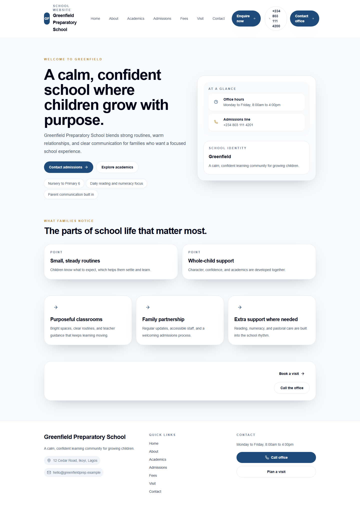
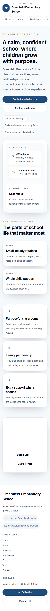
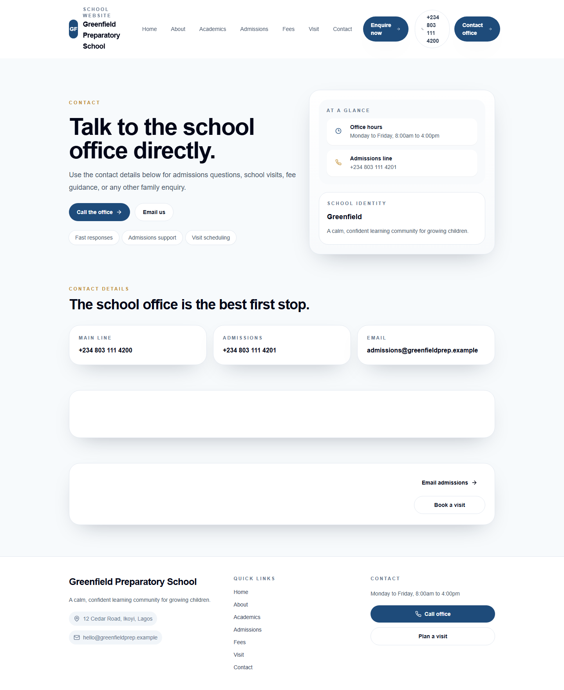
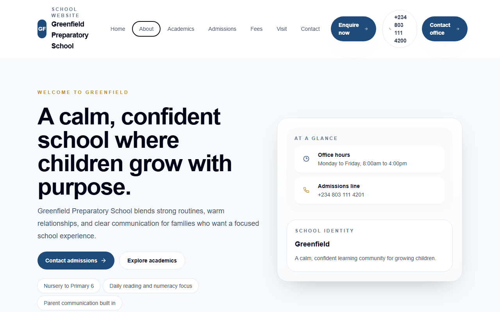
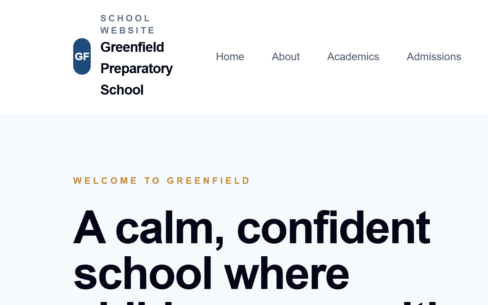
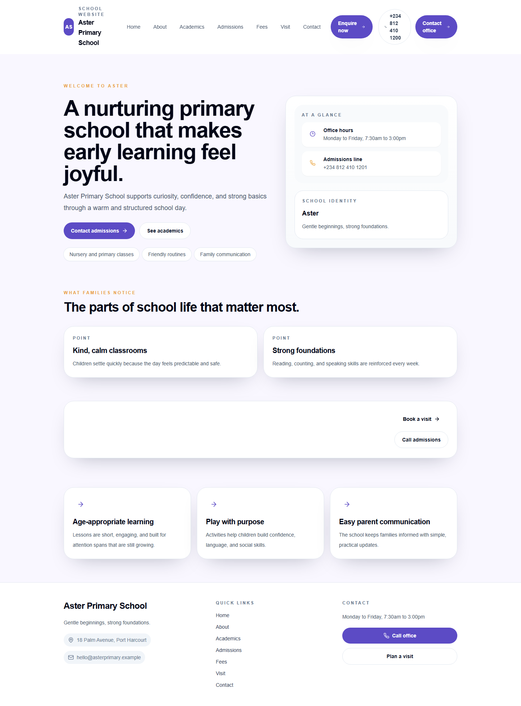

U1Partial / locally verified
Governance, scoped access, permissions, audit, defaults and bounded aggregates are in source. Unsupported selected routes and runtime rollout remain gated.
U1–U6 code passed complete non-live verification and final code review. U7a delivered this disk-openable report, manifests and ten real static Sites screenshots. Authenticated screenshots are incomplete due the technical environment authorization gate.
“Local” means repository implementation plus synthetic tests. It does not mean deployed, authenticated, provider-approved or production-ready.
Governance, scoped access, permissions, audit, defaults and bounded aggregates are in source. Unsupported selected routes and runtime rollout remain gated.
Grade policy/consumers, numbering and bank snapshots pass local checks. Group-wide counters and real print/browser evidence remain open.
Draft lifecycle and inventoried people/long forms are implemented. Real browser history, conflict, reconnect and cron rollout are blocked.
Email workbench and reviewed import are safe locally. Mailbox provider, AI and file intake remain unavailable.
Commercial/usage/lifecycle surfaces exist; provider dispatch, payments, upload transport, AV and PDF promotion remain unavailable.
Within-group transfer and direct-student Portal continuity are implemented. Parent/legacy repair and browser rollout remain open.
Disk-openable report and ten real Sites captures delivered. Authenticated screenshots are incomplete due the technical environment authorization gate.
Desktop, 320/390px mobile, keyboard, 200% page scale, second theme, missing route, unknown host and inactive host.
Each required authenticated screenshot group is explicitly Blocked with the exact absent-allowlist and unset-shell reason in both manifests.
No mock screens, placeholder screenshots, credential reuse, stale restored snapshot claims or report previews counted as implementation evidence.
Captured from the existing statically published configuration on the only authorized app. Select any image to open its original PNG by relative path.








pnpm --filter @school/sites exec next dev --webpack --port 3005 -H 0.0.0.00.0.0.0:3005http://localhost:3005 (configured preview redirect)http://greenfield.schoolos.localhost:3005100.84.230.66http://100.84.230.66:3005 (real unknown-host 404 by hostname policy)A remote client needs a local DNS/hosts mapping from the published school hostname to 100.84.230.66 to render the active school through Tailscale. Raw IP access reaches the listener but is intentionally unknown to Sites.
Binding to 0.0.0.0 is not Tailscale-only and may also expose port 3005 on the local network depending on Windows Firewall and network settings. No Funnel, port forwarding or public tunnel was used.
Purpose, prior state, delivered change, persona, app/route, permission, test evidence and limitation are kept together for review.
Workspace shells; auth APIsAdmin allowlist; /assessments/exams/entry; /enrollment/subjects/groups · /admin/group/admin/permissions/admin/audit · /audit/admin/group · /admin/settings/group-defaults/admin/group/assessments/setup/grading-bandsScore entry · report cards · Portal results/admin/settings/admission-numbering · enrollment/profile/import/transfer/billing · /billing in PortalAdopted long-form routes/academic/students/onboarding · /academic/students · /academic/teachers/billing · /academic/sessions · assessment setup · /planning/lesson-plansSchool settings, shells, report sheets, public Sites/, /contact, /admissions, unknown route/host/admin/settings/email-domains/students/import and /academic/students/import/commercial · /billing/subscription · /billing/settlements/commercial · /billing/usage · planning/OCR preflight/admin/assets/admin/assets/archive · /admin/assets/trash/academic/students/transfers · Portal routesNoneAll sensitive surfacesFinal successful commands from results/full-verification.md. Root Playwright was intentionally excluded because its global setup seeds Convex.
| Exact command | Result | Coverage | Wall |
|---|---|---|---|
pnpm typecheck | PASS | 16/16 Turbo tasks; 10 workspace typechecks plus six dependency builds | 620s |
pnpm lint | PASS | 10/10 tasks; 0 errors, 145 warnings | 40s |
pnpm test | PASS | 6/6 tasks; 675/675 tests | 80s |
pnpm --filter @school/convex typecheck | PASS | No diagnostics | 6s |
pnpm --filter @school/convex lint | PASS | No diagnostics | 10s |
pnpm build | PASS | 6/6 Next application builds | 355s |
node scripts/audit-theme-colors.mjs | PASS · informational | 5 grade-policy fixture colors classified | <1s |
git diff --check f6fc7c4 | PASS | 0 whitespace errors | <1s |
--passWithNoTests. Platform and Sites have no test script. Builds emitted existing Browserslist notices. None of these warnings was hidden.The five final-review blockers and three rereview residuals were remediated. Final focused acceptance passed 52 tests across usage entitlements, commercial, transfers and reviewed imports; Convex/Admin typechecks and diff check passed. Full verification then passed 675 tests and all six builds.
This approval is code review only. Runtime authorization, providers, legal review, rollout and browser persona evidence remain separate.
Live GitHub state at reconciliation: PRs #23–#31 are open draft pull requests; PR #31 is the integration PR for this branch. Nothing is merged, and E0/runtime authorization remains gated.
| Boundary | Base | PR status | Primary commit |
|---|---|---|---|
| Architecture docs | master | PR #30 · draft | 44086fa ancestor; not U1–U6 authorship |
| U1 | docs/module-entitlements-checkpoint | PR #23 · draft | 53d4417 plus shared prerequisite |
| U2 | feat/melo-productization-u1 | PR #24 · draft | 9e0d55a |
| U3 | feat/melo-productization-u2 | PR #25 · draft | 3225f41 |
| U4 | feat/melo-productization-u3 | PR #26 · draft | 5043200 |
| U5 | feat/melo-productization-u4 | PR #27 · draft | aa46e20 |
| U6 | feat/melo-productization-u5 | PR #28 · draft | f814be9 + 2463b62 |
| Integration / E0 | feat/melo-expansion-productization | PR #31 · open draft · integration URL | 7490460 U7 evidence; local implementation final, authenticated acceptance blocked |
| S0 records | feat/melo-productization-u6 | PR #29 · draft | 3ec1fee |
61cdbc7 shared contracts/schema53d4417 U1 governance9e0d55a U2 configuration3225f41 U3 drafts/theme5043200 U4 email/importaa46e20 U5 commercial/assetsf814be9 U6 transfers2463b62 governance test correctionf83c810 draft lifecycle0d09b68 asset cleanupf2cfad4 audit paginationb4ae726 reviewed importd3a0f5a scoped workspacesaea8ddf bounded aggregatesb9a2c68 numbering65861a2 people drafts5bfe4b9 long-form recovery7b7ba62 Portal transfer identitybf9b195 commercial follow-upc06e297 usage preflight6779dd3 email persistence/pagination767c5f5 group defaultsbef3cae Teacher branch switchingc48f19f usage/invoice remediation83ff0c3 transfer review bindingbee721c grade import evidence0ca9039 pool provenancec66580a final residual fixes0567877 verification suite alignment4a5155d full verification record7490460 U7 acceptance evidence and reportCONVEX_DEPLOYMENT unset.Screenshots incomplete due technical environment authorization gate
No route, API or acceptance claim exists. Future work requires guardian/student authorization, verified institutions, explicit record selection, legal/privacy approval, cryptographically attributable history, expiry/conflict/correction design and destination-controlled enrollment. U6 within-group transfer is a foundation, not M9 completion.
| Artifact | Purpose |
|---|---|
| evidence-manifest.json | Machine-readable captures, hashes, exact blocked requirements, environment and safety flags. |
| evidence-manifest.md | Human-readable evidence and blocked screenshot ledger. |
| results/U7a.md | Session result, exact commands, checks and limitations. |
| UI coverage matrix | Requirement-level implementation and evidence truth. |
| Full verification | All non-live test/typecheck/lint/build commands and warnings. |
| Final code acceptance | Independent approval of residual code remediation. |
| U7 preflight | Value-silent environment, browser, target and command gate inventory. |
| Product decisions | Normative behavior and exclusions. |
This HTML contains inline CSS and JavaScript only, loads screenshots by relative path, and makes no external network request when opened from disk.
{kind=link}
{kind=link}
{kind=link}
{kind=link}
{kind=link}
{kind=link}
{kind=link}
{kind=link}